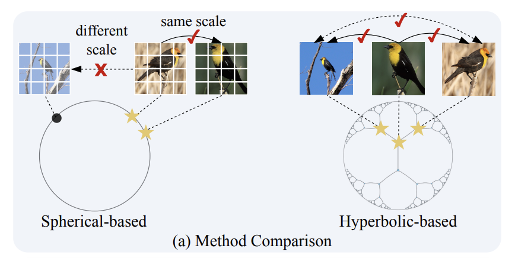

|
Zhenqi He I am a first-year PhD student at the Hong Kong University of Science and Technology (HKUST), supervised by Prof. Long Chen. Before that, I obtained my M.S. and BSc degree from the University of Hong Kong, where I was advised by Prof. Kai HAN in Visual AI Lab. I am fortunate to have internships at Huawei Hong Kong Research Center and Hong Kong Observatory. Email / Google Scholar / X / ResearchGate / |

|
ResearchMy research interests include Open-World Learning, Generative Models and AI4Science. |
|  |
Hyperbolic Category Discovery
Yuanpei Liu*, Zhenqi He*, Kai Han (*: Equal Contribution); CVPR, 2025 [Paper] / [Code] We introduce HypCD, a simple Hyperbolic framework for learning hierarchy-aware representations and classifiers for generalized Category Discovery. HypCD first transforms the Euclidean embedding space of the backbone network into hyperbolic space, facilitating subsequent representation and classification learning by considering both hyperbolic distance and the angle between samples. |
|
TransNuSeg: A Lightweight Multi-Task Transformer for Nuclei Segmentation
Zhenqi He, Mathias Unberath, Jing Ke, Yiqing Shen; MICCAI, 2023 [Paper] / [Code] This paper proposes a lightweight multi-task framework for nuclei segmentation, namely TransNuSeg, as the first attempt at an entirely Swin-Transformer driven architecture. Innovatively, to alleviate the prediction inconsistency between branches, we propose a self-distillation loss that regulates the consistency between the nuclei decoder and normal edge decoder. And an innovative attention-sharing scheme that shares attention heads amongst all decoders is employed to leverage the high correlation between tasks. |
|
|
Artifact Restoration in Histology Images with Diffusion Probabilistic Models
Zhenqi He, Junjun He, Jin Ye, Yiqing Shen; MICCAI, 2023 [Paper] / [Code] This is the first attempt at a denoising diffusion probabilistic model for histological artifact restoration, called ArtiFusion. Specifically, ArtiFusion formulates the artifact region restoration as a gradual denoising process, and its training relies solely on artifact-free images to simplify the training complexity. Furthermore, to capture local-global correlations in the regional artifact restoration, a novel Swin-Transformer denoising architecture is designed, along with a time token scheme. Our extensive evaluations demonstrate the effectiveness of ArtiFusion as a pre-processing method for histology analysis, which can successfully preserve the tissue structures and stain style in artifact-free regions during the restoration. |
|
|
Large Language Models are Good Multi-lingual Learners: When LLMs Meet Cross-lingual Prompts
Teng Wang, Zhenqi He,Wing-Yin Yu, Xiaojin Fu, Xiongwei Han; COLING, 2025 [Paper] We introduce a framework integrating MLPrompt with an auto-checking mechanism for structured data generation, with a specific case study in text-toMIP instances. |
|
|
Histology Image Artifact Restoration with Lightweight Transformer and Diffusion Model
Chong Wang, Zhenqi He, Junjun He, Jin Ye, Yiqing Shen; AIME, 2024 [Paper] / [Code] In this paper, we propose a lightweight transformer based framework for histological artifacts restoration. In comparison to existing generative adversarial network (GAN) based solutions, our method minimizes changes in morphology while maximizing preservation of the stain style during the restoration of the artifact. By providing a more reliable and accurate restoration of artifact-affected areas, our model facilitates better analysis and interpretation of histological images, thereby potentially improving the accuracy of tumor diagnosis and treatment decisions. |
|
|
Latent ArtiFusion: a Effective and Efficient Histological Artifacts Restoration Framework
Zhenqi He, Wenrui Liu, Minghao Yin, Kai Han; DGM4MICCAI, 2024 [Paper] / [Code] In this paper, we propose a novel framework, namely LatentArtiFusion, which leverages the latent diffusion model (LDM) to reconstruct histological artifacts with high performance and computational efficiency. Unlike traditional pixel-level diffusion frameworks, LatentArtiFusion executes the restoration process in a lower-dimensional latent space, significantly improving computational efficiency. Through extensive experiments on real-world histology datasets, LatentArtiFusion demonstrates remarkable speed, outperforming state-of-the-art pixel-level diffusion frameworks by more than 30×. |
|
Academic Service |
Reviewer, MICCAI 2025
Reviewer, MICCAI 2024 Reviewer, DGM4MICCAI 2024 |
Education
|
Ph.D. in Computer Science and Engineering HKUST, Clear Water Bay 2025 - 2029 Advisor: Prof. Long Chen |
|

|
MSc. in Artificial Intelligence The University of Hong Kong, Hong Kong Sep. 2023 - Jan. 2025 Advisor: Prof. Kai Han Grade: Distinction |
|
|
BSc in Mathematics (Double Major in Computer Science) The University of Hong Kong, Hong Kong Sep. 2018 - Jun. 2023 |
Experiences
|
Research Intern Huawei Hong Kong Research Center, Hong Kong Jan. 2024 – Dec. 2024 Mentor: Dr. Sun Chumin |
|
|
Research Intern Hong Kong Observatory, Hong Kong Jan. 2022 – Jan. 2023 |
|
This page is build on source code |